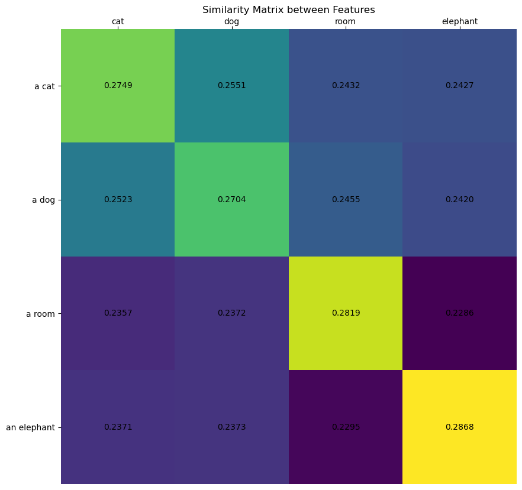
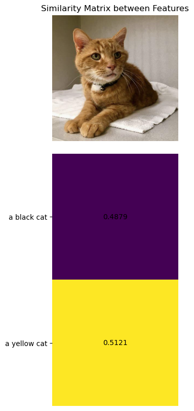
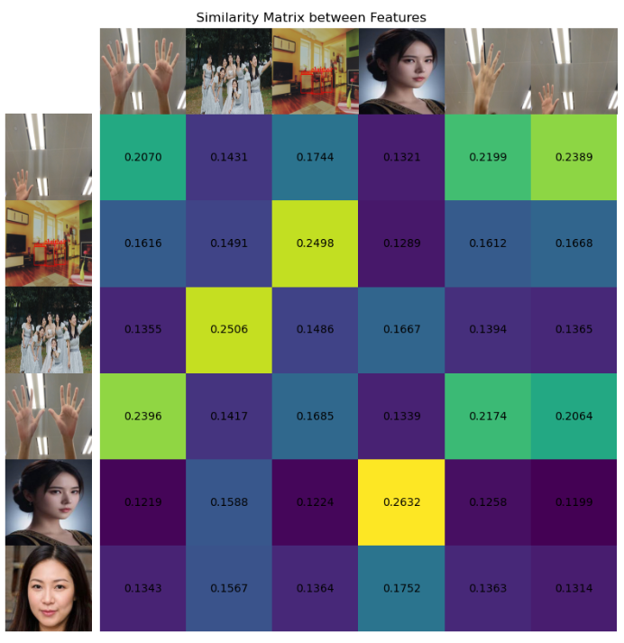

XEdu的常见函数
XEdu.utils中的函数
在XEdu-python库中，我们封装了一系列数据处理函数，可以帮助你方便地完成AI推理和部署。这些函数被封装在XEdu.utils中，你可以这样引入它们：
from XEdu.utils import *
或者具体写明引入的函数
from XEdu.utils import softmax, cosine_similarity, get_similarity, visualize similarity
下面对函数展开使用介绍。
softmax
1.函数说明
softmax函数是一个常用的非线性函数，它用于将一个numpy数组映射到0到1之间的数值，同时所有数值之和为1。神经网络最终输出的结果是一串数字，如果想要把数字映射为各类概率，那么使用softmax函数再好不过了。
2.使用示例
from XEdu.utils import *
import numpy as np
data = np.array([[1,2],[3,3]])
output = softmax(data)
print(output)
# [[0.2689414213699951, 0.7310585786300049], [0.5, 0.5]]
在这个例子中，需要处理两组数据，[1,2]和[3,3]，对于第一组数据，按照softmax算法（一种指数算法）进行映射，得到输出是[0.2689414213699951, 0.7310585786300049]，而第二组数据两个数值相等，得到就是平均分配的[0.5, 0.5]。每一组数据经过处理之后的加和都是一。
3.参数说明
输入参数：
x：numpy array，对数据尺寸没有要求。
输出结果：
list，形状与输入相同，数组映射到0到1之间的数值，同时所有数值之和为1。
4.函数实现揭秘
def softmax(x):
x1 = x - np.max(x, axis = 1, keepdims = True) #减掉最大值防止溢出
x1 = np.exp(x1) / np.sum(np.exp(x1), axis = 1, keepdims = True)
return x1.tolist()
cosine_similarity
1.函数说明 该函数可以比较两个embedding序列的相似度，这里的相似度是以余弦相似度为计算指标的，在高中我们就学习过余弦定理，这里的余弦相似度公式也是类似的，具体计算可以参考这里。
2.使用示例
from XEdu.utils import *
output = cosine_similarity(txt_embeddings1,txt_embeddings2)
print(output)
# [[0.86931829 0.94491118 0.94491118]
# [0.98270763 0.94491118 0.83152184]]
3.参数说明
embeddings_1：一个numpy数组，数据维度为(N, D)，表示N个具有D维的embedding；
embeddings_2：另一个numpy数组，数据维度为(M, D)，表示M个具有D维的embedding；
4.函数实现揭秘
该函数实际是利用了numpy的矩阵乘法运算符@，numpy的矩阵乘法运算符@可以直接实现两个矩阵的点积，从而计算两个embedding序列的余弦相似度。最终输出的结果尺度为(N, M)。
def cosine_similarity(embeddings_1: np.ndarray, embeddings_2: np.ndarray) -> np.ndarray:
"""Compute the pairwise cosine similarities between two embedding arrays.
Args:
embeddings_1: An array of embeddings of shape (N, D).
embeddings_2: An array of embeddings of shape (M, D).
Returns:
An array of shape (N, M) with the pairwise cosine similarities.
"""
for embeddings in [embeddings_1, embeddings_2]:
if len(embeddings.shape) != 2:
raise ValueError(
f"Expected 2-D arrays but got shape {embeddings.shape}."
)
d1 = embeddings_1.shape[1]
d2 = embeddings_2.shape[1]
if d1 != d2:
raise ValueError(
"Expected second dimension of embeddings_1 and embeddings_2 to "
f"match, but got {d1} and {d2} respectively."
)
def normalize(embeddings):
return embeddings / np.linalg.norm(embeddings, axis=1, keepdims=True)
embeddings_1 = normalize(embeddings_1)
embeddings_2 = normalize(embeddings_2)
return embeddings_1 @ embeddings_2.T
5.更多用法
结合XEduHubwf(task='embedding_image')或者wf(task='embedding_text')的任务中，对数据进行embedding操作之后，可以计算不同数据之间的相似度，就可以使用该函数。embedding会在图像嵌入和文本嵌入中用到，具体案例可参见：教程1-7
对两组文本转换出的向量进行相似度比较，可以得到一个比较矩阵，代表每两个字符串之间的相似度，我们可以看到对角线上的词相似度是最高的。下面这个例子将让你有更好的理解：
from XEdu.hub import Workflow as wf # 导入库
from XEdu.utils import *
txt_emb = wf(task='embedding_text')# 实例化模型
txts1 = ['cat','dog'] # 指定文本1
txts2 = ['a cat','a dog','a room','an elephant'] # 指定文本2
txt_embeddings1 = txt_emb.inference(data=txts1) # 获得向量1
txt_embeddings2 = txt_emb.inference(data=txts2) # 获得向量2
print(txt_embeddings1.shape)
# (2, 512) 两组文本中的字符串数量无需一致，但都会转换为512个特征
output = cosine_similarity(txt_embeddings1,txt_embeddings2) # 计算向量1和向量2的余弦相似度
print(output)
# [[0.94926983 0.86368805 0.7956152 0.8016052 ]
# [0.89295036 0.9511493 0.8203819 0.82089627]]
print(softmax(output))
# [[0.27485617995262146, 0.25231191515922546, 0.23570789396762848, 0.2371240258216858],
# [0.25507545471191406, 0.2703610360622406, 0.23722068965435028, 0.2373427450656891]]
图片之间也可以计算相似度，给定的列表中，需要指明各图片的文件所在路径。
from XEdu.hub import Workflow as wf # 导入库
from XEdu.utils import *
img_emb = wf(task='embedding_image') # 实例化模型
image_embeddings1 = img_emb.inference(data='demo/cat.png') # 模型推理
image_embeddings2 = img_emb.inference(data='demo/dog.png') # 模型推理
output = cosine_similarity(image_embeddings1,image_embeddings2) # 计算向量1和向量2的余弦相似度
print(output)
print(softmax(output))
get_similarity
1.函数说明
上面的函数cosine_similarity能够计算两个embedding向量的余弦相似度，而get_similarity则提供了更丰富的选择，该函数可以选择相似度的比较算法，可选’cosine’, ‘euclidean’, ‘manhattan’, ‘chebyshev’, ‘pearson’，默认是’cosine’（method=’cosine’）。
2.使用示例
from XEdu.utils import * # 导入库
logits = get_similarity(image_embeddings, txt_embeddings,method='cosine') # 计算余弦相似度
print(logits) # 输出相似度计算结果
# [[0.48788464069366455, 0.5121153593063354]]
可以看出，使用这个函数是对前面cosine_similarity和softmax的统一封装，这里经历了计算相似度，然后进行归一化的过程。
3.参数说明
输入参数：
embeddings_1：一个numpy数组，数据维度为(N, D)，表示N个具有D维的embedding；
embeddings_2：另一个numpy数组，数据维度为(M, D)，表示M个具有D维的embedding；
method：计算方法，可选’cosine’, ‘euclidean’, ‘manhattan’, ‘chebyshev’, ‘pearson’，默认是’cosine’（method=’cosine’）；
use_softmax：是否进行归一化，默认为True，即进行归一化。
输出结果：
list，形状与输入相同，数组映射到0到1之间的数值，同时所有数值之和为1。
4.函数实现揭秘
该函数实际是利用了numpy的矩阵乘法运算符@，numpy的矩阵乘法运算符@可以直接实现两个矩阵的点积，从而计算两个embedding序列的余弦相似度。最终输出的结果尺度为
输入还可以指定计算方法method，可选’cosine’, ‘euclidean’, ‘manhattan’, ‘chebyshev’, ‘pearson’，默认是’cosine’（method=’cosine’）。
对于相似度计算结果可选择是否进行归一化，默认是进行归一化（use_softmax=True）。
def get_similarity(embeddings_1: np.ndarray, embeddings_2: np.ndarray,method:str='cosine',use_softmax:bool=True) -> np.ndarray:
"""Compute pairwise similarity scores between two arrays of embeddings.
Args:
embeddings_1: An array of embeddings of shape (N, D) or (D,).
embeddings_2: An array of embeddings of shape (M, D) or (D,).
method: The method used to compute similarity. Options are 'cosine', 'euclidean', 'manhattan', 'chebyshev', 'pearson'. Default is 'cosine'.
use_softmax: Whether to apply softmax to the similarity scores. Default is True.
Returns:
An array with the pairwise similarity scores. If both inputs are 2-D,
the output will be of shape (N, M). If one input is 1-D, the output
will be of shape (N,) or (M,). If both inputs are 1-D, the output
will be a scalar.
"""
if embeddings_1.ndim == 1:
# Convert to 2-D array using x[np.newaxis, :]
# and remove the extra dimension at the end.
return get_similarity(
embeddings_1[np.newaxis, :], embeddings_2
)[0]
if embeddings_2.ndim == 1:
# Convert to 2-D array using x[np.newaxis, :]
# and remove the extra dimension at the end.
return get_similarity(
embeddings_1, embeddings_2[np.newaxis, :]
)[:, 0]
if method == 'cosine':
similarity = cosine_similarity(embeddings_1, embeddings_2) * 100
elif method == 'euclidean':
distance = np.array([[np.linalg.norm(i - j) for j in embeddings_2] for i in embeddings_1]) * 100
sigma = np.mean(distance) # Or choose sigma in some other way
similarity = np.exp(-distance ** 2 / (2 * sigma ** 2)) * 100
elif method == 'pearson':
similarity = np.array([[np.corrcoef(i, j)[0,1] for j in embeddings_2] for i in embeddings_1]) * 100
else:
raise ValueError(
f"Expected method to be cosine,euclidean and pearson but got {method}."
)
if use_softmax:
return softmax(similarity)
else:
return similarity
5.更多用法
同样的，结合XEduHubwf(task='embedding_image')或者wf(task='embedding_text')的任务中，对数据进行embedding操作之后，可以计算不同数据之间的相似度，就可以使用该函数。embedding会在图像嵌入和文本嵌入中用到，具体案例可参见：教程1-7
可计算图文、文文、图图的相似度。
cosine_similarity 函数和get_similarity函数的联系
get_similarity 函数实际上是对 cosine_similarity 函数的扩展和泛化。它不仅支持余弦相似度，还支持其他距离测量方法，并提供了可选的 softmax 应用，使其功能更为丰富和灵活。在 get_similarity 中使用 ‘cosine’ 方法时，它会调用 cosine_similarity 函数来计算余弦相似度，同时还有是否进行归一化的处理。因此 cosine_similarity 可以视为 get_similarity 的一个特定实现。
visualize_similarity
1.函数说明
为了能够更加直观地展示相似度计算之后的结果，这里还提供了可视化相似度的方法，调用这个函数，可以将数值映射为不同颜色深度的图像，方便对比。一般配合前面介绍的两个similarity计算函数使用。
2.使用示例
# 文本-文本比较相似度
from XEdu.hub import Workflow as wf
from XEdu.utils import *
txt_emb = wf(task='embedding_text')# 实例化模型
txts1 = ['cat','dog','room','elephant'] # 指定文本
txts2 = ['a cat','a dog','a room','an elephant'] # 指定文本
txt_embeddings1 = txt_emb.inference(data=txts1) # 模型推理
txt_embeddings2 = txt_emb.inference(data=txts2) # 模型推理
logits = get_similarity(txt_embeddings1, txt_embeddings2,method='cosine') # 计算余弦相似度
print(logits)
visualize_similarity(logits,txts1,txts2) # 可视化相似度矩阵
 从图中可以看出，对不同词向量之间进行的对比，对角线上的几个词的相似度是最高的。
3.参数说明
输入参数：
similarity: 前面通过cosine_similarity或get_similarity计算得到的相似度矩阵；
x: List[str]，原始图片或文本的列表；
y: List[str]，原始图片或文本的列表。
figsize:可视化时展示原始图片（如有传入）的尺寸，默认为(10,10)。
输出结果：
一个matplotlib格式的图片。
4.函数实现揭秘
def visualize_similarity(similarity, x,y,figsize=(10,10)):
"""Visualize the similarity matrix.
Args:
similarity: similarity scores matrix. List|ndarray of shape (N, M) or (M, N).
x: A list of images or texts for each row of the similarity matrix. List[str]
y: A list of images or texts for each column of the similarity matrix.
Returns:
A matplotlib figure object.
"""
# 中文字体，y轴文本/图像
# plt.rcParams['font.sans-serif']=['times'] #用来正常显示中文标签
# plt.rcParams['axes.unicode_minus'] = False #用来正常显示负号
# 图像尺寸
plt.figure(figsize=figsize)
if isinstance(similarity, list):
similarity = np.array(similarity).T
else:
similarity = similarity.T
if isinstance(x[0], str) and os.path.exists(x[0]):
x_im = True
images = [plt.imread(image,0) for image in x]
else:
x_im = False
images = x
if isinstance(y[0], str) and os.path.exists(y[0]):
y_im = True
texts = [plt.imread(image,0) for image in y]
else:
y_im = False
texts = y
count = len(similarity)
plt.imshow(similarity, vmin=max(0.0, np.min(similarity)), vmax=np.max(similarity), cmap='viridis', interpolation='nearest')
# plt.colorbar()
if x_im and y_im:
plt.xticks([])
plt.yticks([])
for i, image in enumerate(texts):
plt.imshow(image, extent=( -1.6, -0.6,i + 0.5, i - 0.5,), origin="lower")
for i, image in enumerate(images):
plt.imshow(image, extent=(i - 0.5, i + 0.5, 6.5, 5.5), origin="lower")
if y_im and not x_im: # y轴是图片，x轴是文本
plt.yticks([]) # 去掉y轴刻度
for i, image in enumerate(texts):
plt.imshow(image, extent=( -1.6, -0.6,i + 0.5, i - 0.5,), origin="lower")
plt.tick_params(axis='x', which='both', bottom=False, top=True, labelbottom=False,labeltop=True,pad=0)
plt.xticks(range(len(images)), images,position=(0,1),)#,fontproperties='SimHei')#, fontsize=18)
if not y_im and x_im: # y轴是文本，x轴是图片
plt.yticks(range(count), texts)# , fontsize=18)
plt.xticks([])
for i, image in enumerate(images):
plt.imshow(image, extent=(i - 0.5, i + 0.5, -1.6, -0.6), origin="lower")
if not x_im and not y_im: # x轴和y轴都是文本
plt.yticks(range(count), texts)# , fontsize=18)
plt.tick_params(axis='x', which='both', bottom=False, top=True, labelbottom=False,labeltop=True,pad=0)
plt.xticks(range(len(images)), images,position=(0,1),)#,fontproperties='SimHei')#, fontsize=18)
for x in range(similarity.shape[1]):
for y in range(similarity.shape[0]):
plt.text(x, y, f"{similarity[y, x]:.4f}", ha="center", va="center")#, size=12)
for side in ["left", "top", "right", "bottom"]:
plt.gca().spines[side].set_visible(False)
if x_im and y_im:
plt.xlim([-1.6,len(similarity[1]) - 0.5])
plt.ylim([-0.5, len(similarity) + 0.5])
elif x_im and not y_im:
plt.xlim([-0.5, len(similarity[1]) - 0.5])
plt.ylim([len(similarity) - 0.5, -1.6])
elif y_im and not x_im:
plt.ylim([-0.5, len(similarity) - 0.5])
plt.xlim([-1.6,len(similarity[1]) - 0.5])
plt.title("Similarity Matrix between Features")
plt.show()
return plt
5.更多用法
图文相似度比较可视化结果：

图图相似度比较可视化结果：
